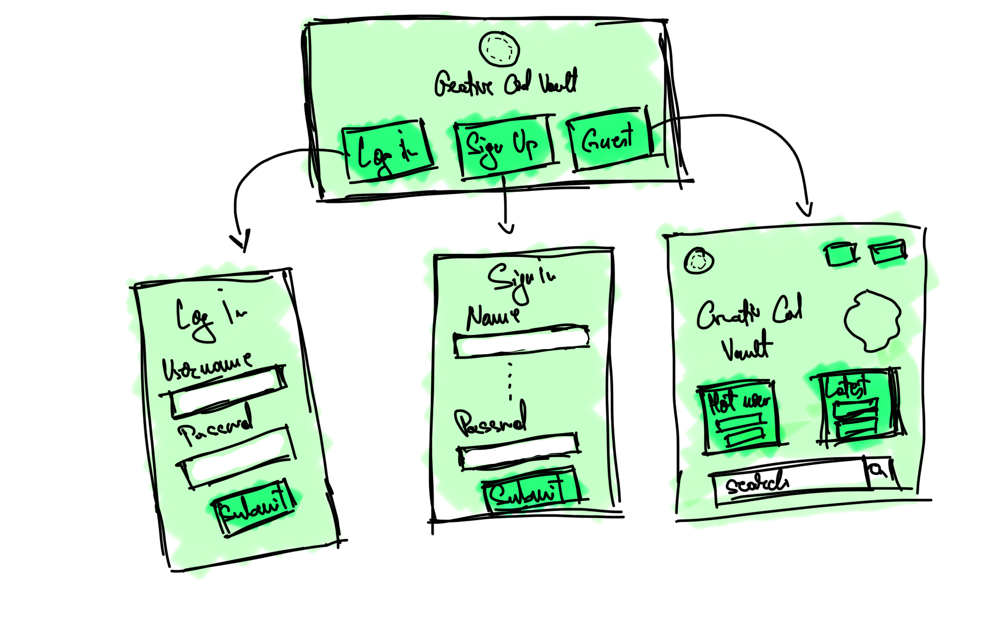
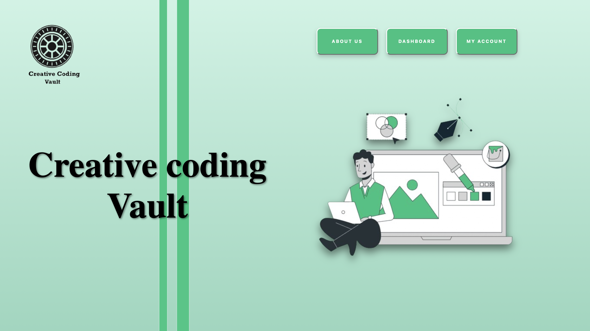
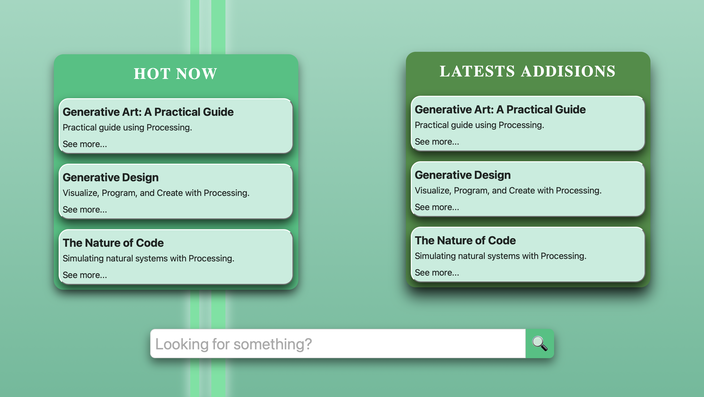
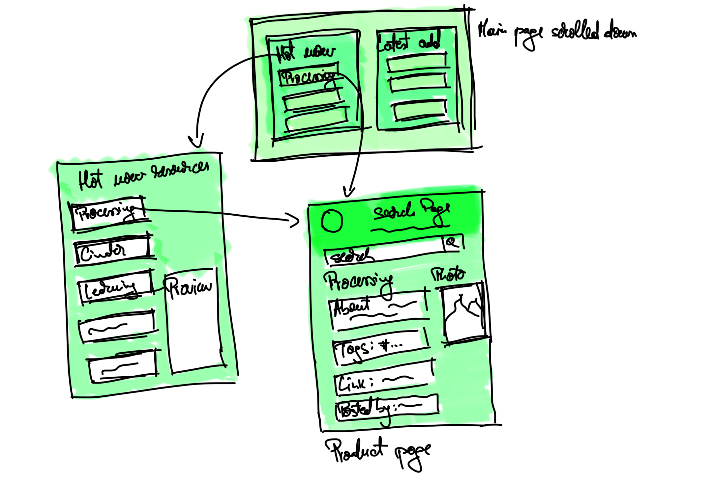
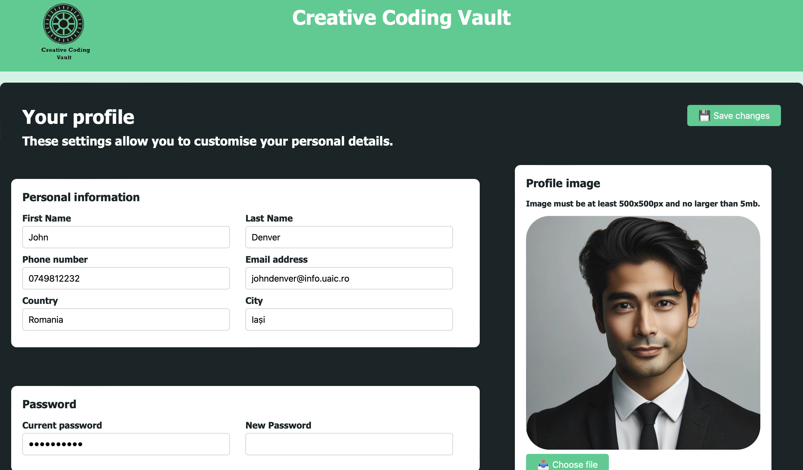
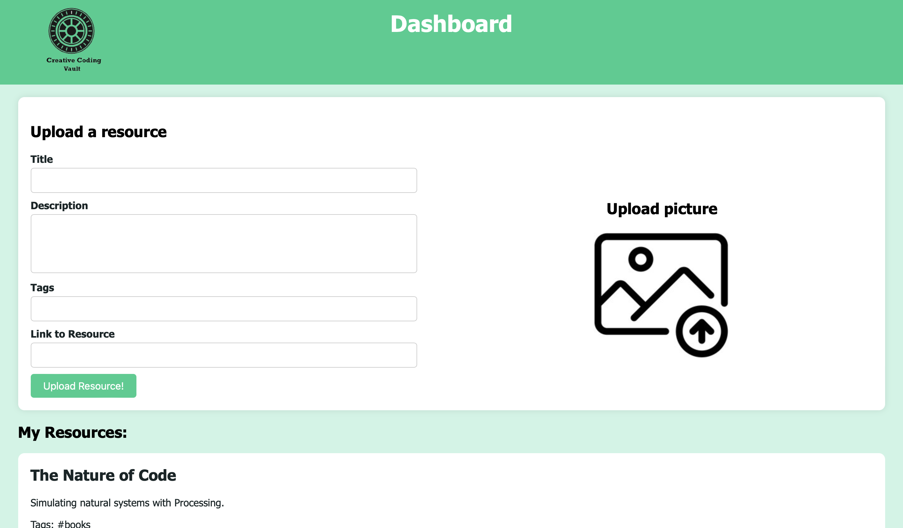
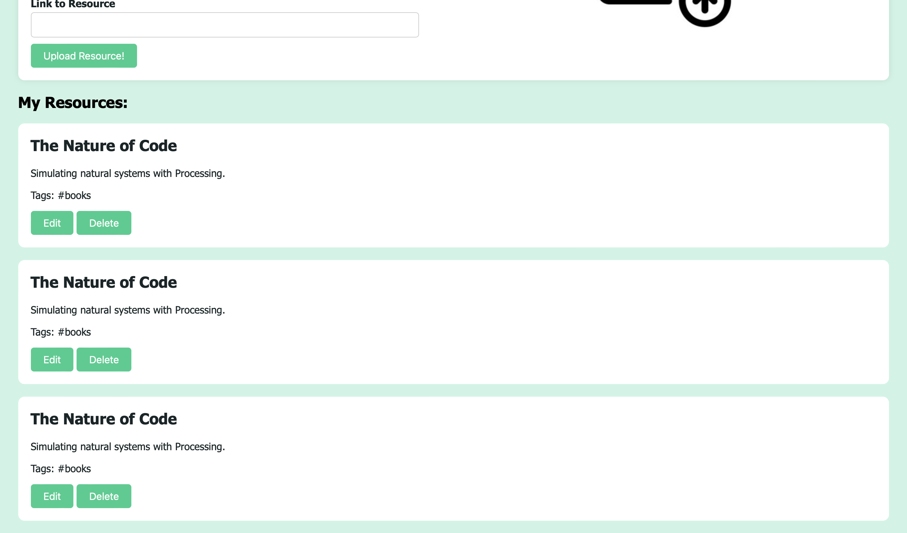

Resource Finder - Creative Coding Vault
Authors:
- Isache Bogdan
- Moloce Alin
Affiliation: University "Alexandru Ioan Cuza", Department of Computer Science
1. Introduction
1.1 Purpose
ReFi (Resource Finder) is a comprehensive platform designed to assist developers in sourcing, organizing, and discovering resources relevant to creative programming endeavors. ReFi aims to streamline the process of locating specialized websites, tutorials, multimedia presentations, source code, and software projects tailored to various aspects of creative coding, such as JavaScript, WebGL, and WebAssembly. By enabling users to specify their programming language preferences, desired outcomes (e.g., 2D illustration, 3D virtual worlds, animations, or sound content), and interaction preferences, ReFi will provide personalized recommendations for existing software solutions, including frameworks, libraries, and components essential for creating specific artifacts.
1.2 Intended Audience
ReFi is designed for those who will utilize the ReFi platform to discover and access resources relevant to creative programming. Users may include programmers, developers, artists, designers, educators, and other professionals or enthusiasts interested in creative coding and related disciplines. The focus is on those who will engage with the platform's features and functionalities to achieve their creative programming goals.
1.3 Product Scope
By leveraging resources from the GitHub repository "awesome-creative-coding" (https://github.com/terkelg/awesome-creative-coding), ReFi offers users a curated collection of tools, frameworks, libraries, and components tailored to various aspects of creative programming, such as JavaScript, WebGL, and WebAssembly. The primary goal of ReFi is to enhance the creative programming experience by simplifying the resource discovery process and facilitating access to relevant tools and materials. By providing users with personalized recommendations based on their programming language preferences, desired outcomes, and interaction preferences, ReFi aims to empower individuals to explore and experiment with creative coding techniques more effectively.
1.4 References
GitHub Repository for "awesome-creative-coding":
- Title: Awesome Creative Coding
- Author: Terkel Gjervig
- Source or Location: https://github.com/terkelg/awesome-creative-coding
2. Overall description
2.1 Product Perpective
This is a new, self-contained product, which provides a frindly and accesible way for programmers, but not only, to gather useful and practical resources, regarding creative coding. It takes use of the natural language processing in order to provide the most accurate resource, which suits best the client needs.
2.2 Product Functions
The product wil have the following functionalities:
- Resource Recomandation
- Natural language processing
- Fast and clever filtering of the resources based on search algorithms
2.3. User Classes and Characteristics
There will be 2 types of users: admin and guest. The main difference between them, is that the admin will have the posibility of uploading resources on the website and modifying/deleting his previous uploads, while the guest user will only have the permission to view them. We have to note that the admin is the most important class, including all the functionalities that the guest has. In order for a client to register and become an admin, he must complete a sign up formular with data about name, surname, email, phone, country, city, username and password. After that he must log in with the credentials.
2.4 Operating Environment
The product is designed to operate in a web-based environment. It uses php 8.2 for the backend and HTML, CSS and JavaScript for the frontend. It is responsive, which makes it compatible with multiple hardware platforms (desktops, tablet, mobile, ...) and operating systems as well as different browsers.
2.5 Assumptions and Dependencies
Assumptions and dependencies include the MySql database for colecting various user prefferences and storing the resources brief descriptions, as well as the pictures.
3. External Interface Requirements
3.1 User Interfaces
The web application will offer a simple, intuitive and responsive design in order to make the users experience as eazy and pleasent as possible.
3.1.1 First Page
The main page will let the user chose how to continue. As an admin or as a guest. It features a nice animation and 3 large buttons, in order to make it very intuitive. If the user deicdes to access the website as an admin, he must log in and will be redirected to the log in page. If the user wants to enter as a guest, he can just press the button "Enter as guest". If he wants to become and admin, he will press the sign up button and be redirecte to the sign up page.
3.1.2 Log in page
This page will authetificate the user through a HTML form. If the username and the password matches the one in the database, the user is authentificated as admin.
3.1.3 Sign in page
The sign in page consist also in a HTML form with the role of storing the data about the user in the database, in order for him to be able to authetificate as admin.
3.1.4 Main Page
The main page will have 2 variations: guest-main page and admin-main page. The only difference is that from the admin-main page the user has the extra 2 buttons: my accound and dashboard, which lead to the pages accordingly.
Except from that, the pages offer the same functionalities: see the most viewed and latests added resources with a prewiew of top 3 from this week and search for a resource you want. Each button will take the user to the specified page. The hot-now and latests-added will redirect to a dedicated page with the top 5 resources from each category. The resources buttons itself will redirect to the resource page. And after writing the desired resource name and clicking "Enter", it will display all the resources related to the search.
  3.1.5 Product page
The product page will display a brief information about the content of the resource, a picture and the admin who uploaded it. It will also provide a link to redirect to the main page of the resource and tags, which will help in filtering the resources.
3.1.6 Trending&Popular pages
Trending and Popular pages have the same layout. The Trending page displays a list of the most accesed resources from the current month, compared to the Popular page which displays in the same manner those resources that have the most searches, all time. On both pages, there is a Preview resource section. If the user clicks on one resource from the resource list the Preview resource updates automatically to show details about that resource. Also there is a sidepanel where there are resources grouped into categories. If the user clicks on one category it will automatically redirect the user to the search page with the coresponding category filter set.
3.1.7 Search page
The Search page contains a search bar at the top of the page where the user will type the resource name he's trying to find. After pressing search, the "Search results" section will be updated with the corresponding resources found. The user has the posibility to filter the results by selecting the desired filters from the "Fitlers" section. When checking a filter the search results will be automatically updated.
3.1.8 My account page
This page displays the profile of the current logged in admin. The user has the possibility to edit information like: "First Name", "Email" , profile picture, password etc. When user is done, the submit button should be pressed. Next, the user will confirm these changes by email. If done correctly, the user will have its profile changes made.
3.1.9 Dashboard page
The Dashboard page has two components: a form for uploading a new resource and a list of previous uploaded resources by the current logged admin. The user's uploaded resources will be loaded dynamically. An admin can edit or delete previous uploaded resources by pressing the "Edit" and "Delete" buttons from each resource. After pressing the delete button the respective resource will be deleted from the database. When pressing "Edit" the upload resource form will by dynamically completed with the existing resource information. After this the "Upload Resource!" button will be replaced by a button that contains the text "Edit Resource!".
 3.2 Softwear interface
The softwear will interact with the MySql databse in the backend and the server-side logic will be implemented with php 8.2.
4. System Features
4.1 Resource Provided Management
The product will take use of natural language processing in order to be able to give the user the result desired. For that it will use key words and patterns matchings in order to do an efficient graph search by comparing the results with the one in the database.
4.2 Admin user profile management
Users can manage their personal data such as name, username, password, etc., but most important the resources uploaded. They will have access to a dashboard and be able to modify/delete them as they want. The web application also uses a text compressoin algorithm, to make sure it uses the database as efficienlty as possible. In order to upload a ressource, the user will have to fill in the following form:
- Title
- Description
- Tags
- Link to ressource
4.3 Recomandations
The softwear will collect data about ressources being accesed and propose to the user weekly the most searched materials. For that it will calculate every 30 minutes the visitng degree of a ressource and do a mean. It will also take in account the latests addisions and do a ranking also.
5. Other Nonfunctional Requirements
5.1 Security Requirements
Security measures will include protection against attacks like SQL injection, XSS, Directory Traversal and MiTM.